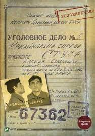

КНИГА №1 У 2021 Р.
Через відомий скандал навколо самі-знаєте-кого, книга Вахтанга Кіпіані "Справа Василя Стуса. Збірка документів з архіву колишнього КДБ УРСР" стала національним бестселером двох останніх років. Ефект вибухового росту популярності внаслідок офіційної заборони уже називають "ефектом Медведчука". Поки суди тривають, видавництво випускає все нові й нові "додаткові тиражі". Смайлик замість крапки в кінці речення не зможе висловити всієї комічності ситуації.
Але книга вийшла хороша - це головне. Кіпіані виконав великий обсяг роботи і вперше в незалежній Україні опублікував настільки вичерпну друковану працю про обставини цькування Василя Стуса радянською владою. Якби ми мали за мету відібрати 10 книг, які варто прочитати кожному українцю - то праця Кіпіані зайняла б чільне місце у цьому списку
СУЧАСНА ПРОЗА
ТАМАРА ГОРІХА ЗЕРНЯ, «ДОЦЯ»
«Доця» — дебютний роман української письменниці Тамари Горіха Зерня, виданий 2019 року видавництвом «Білка». Роман «Доця» був відзначений премією Книга року BBC за 2019 рік. Події в книзі відбуваються 2014 року під час російсько-української війни на сході України. Планується екранізація роману. Готується друге видання, у якому має з'явитись окремий розділ документальних свідчень. Планується також англійський переклад.
Події роману розгортаються навесні-влітку чотирнадцятого року у Донецьку. Донбас - це точка обнуління, місце сили, де прозвучали найважливіші запитання. І тільки там заховані потрібні відповіді. Там, де все починалося, там все і завершиться, коли історія пройде чергове коло і вічний змій Уроборос знову вкусить себе за хвіст. Саме тут героїня втратила родину, дім, роботу, ілюзії - і саме тут зібрала уламки життя заново, віднайшла новий сенс і нову опору. Крок за кроком читач спостерігає процес трансформації, переродження гречкосія у воїна. Ця книга назавжди змінила того, хто її написав, і змінить кожного, хто її прочитає. Бо війна - це коли ти їси землю. І що важливіше, коли годуєш землею.
У 2020 році роман «Доця» став матеріалом для дослідження мовної поведінки та мовної стійкості українців в умовах російсько-української війни. Кандидатка філологічних наук І.Є.Ренчка, старша викладачка кафедри української мови Національного Університету "Києво-Могилянська Академія", за романом Тамари Горіха Зерня схарактеризувала комунікативну поведінку та вияви мовної стійкості українців у Донецьку на початку війни та окупації. Пані Ренчка визначила причини перемикання мовного коду, з’ясувала ставлення до мови учасників подій, виокремила мовні засоби реалізації ідеологічного протиставлення «свій — чужий», проаналізувала поняття «мовна поведінка» і «мовна стійкість» та їх зв’язок з такими поняттями, як «мовна свідомість» та «мовна ситуація» виклала результати дослідження у статті в науково-теоретичному журналі "Українська мова".
SAIGON, “ЮПАК”
«Юпа́к» — російськомовний роман Сергія Сергійовича Saigona, що вийшов у київському видавництві «Білка» у березні 2020 року. Україномовний переклад роману в перекладі Вікторії Назаренко видало те ж видавництво Білка у квітні 2020 році. Автор роману Сергій Сергійович Saigon (справжнє ім'я: Сергій Лещенко) - український ветеран російсько-української війни. 11 грудня 2020 року україномовний переклад роману зроблений Вікторією Назаренко став переможцем премії Книга року BBC 2020.
Юпак - це роман про українське село. Зі своїми традиціями, діалектом, порядками, звичаями та вадами.
Про таке, яким воно було на стику з епохою інтернету. Про сонливе село на сході України, загублене в
запилюженому степу. В степу з гучними цвіркунами, запашним полином і гарячим вітром.
Слово
«Юпак» відсилає до жаргонної назви радянського мотоцикла «Іж Юпітер-5».
Переклад роману українською не є повним, оскільки українською було перекладено лише текст, який в оригіналі був написаний літературною російською мовою, а суржикомовний-в-оригіналі текст був залишений перекладачкою Вікторією Назаренко без змін. Як зазначила в своєму огляді літкритик Тетяна Трофименко саме тим, "хто ненавидить суржик і матюки" цей частково україномовний переклад роману "Юпак" не сподобається. Літкритик Ігор Бондар-Терещенко описуючи роман "Юпак" як "черговий тріумф суржику в сучасній літературі" все ж визнав, що цей "тріумф суржику" не є чимось новим й був підготований ще кілька років до цього Лесем Подерв'янським у його суржикомовних п'єсах. Однак, як підкреслила літкритик Євгенія Кузнецова, хоча суржик й використовувався й до цього деякими письменниками як от Бринихом, Забужко чи Андруховичем, суржик у них завжди був маркером негативності та неосвіченість мовця; а от Сергій Сергійович Saigon з його романом "Юпак", за словами Кузнецової, виходить на якісно "новий рівень легалізації суржику".
ВОЛОДИМИР ЛИС, “СТОЛІТТЯ ЯКОВА”
«Століття Якова» — роман українського письменника Володимира Лиса, опублікований у 2010 році, який став лауреатом престижної премії «Гран Коронації» на міжнародному літературному конкурсі «Коронація слова» (2016). За мотивами роману телестудія «1+1» створила чотирисерійний однойменний серіал (реж. Бата Недич, 2016).
Роман — своєрідний епос-біографія одного поліського українця, який за свій столітній вік пережив п'ять держав: Російську імперію, УНР, Польщу, гітлерівську Німеччину, сталінський СРСР. Доживши до держави Україна, він опинився перед лицем і родинної, і національної драми, яка була запрограмована катастрофами XX століття. У сюжетному плані дія роману відбувається мовби в трьох площинах — протягом останнього столітнього року поліського селянина Якова з села Загорани, за п'ять років до того, коли він рятує наркоманку Оленку, яка забрела в його село, і впродовж майже цілого двадцятого століття. Дитяче кохання, викрадення коханої, що стала чужою нареченою, служба у Війську Польському, кохання до польської шляхтянки, війна з німцями, полон і знову війна, велика і особиста трагічна українсько-польська різанина, драматичні повоєнні події. Селянин усе столітнє життя мешкає у своїй старій хаті на Волині, чекає листа від нещодавно порятованої ним Оленки і приїзду на столітній ювілей сина Артема. З мовознавчої точки зору книга цікава вживанням справжнього західнополіського діалекту, який досі активно вживають у тих краях.
Як правильно читати
- Не відволікайтеся
- Робіть записи
- Візуалізуйте прочитане
- Пишіть на полях, загинайте куточки
- Не потрібно читати, якщо нудно